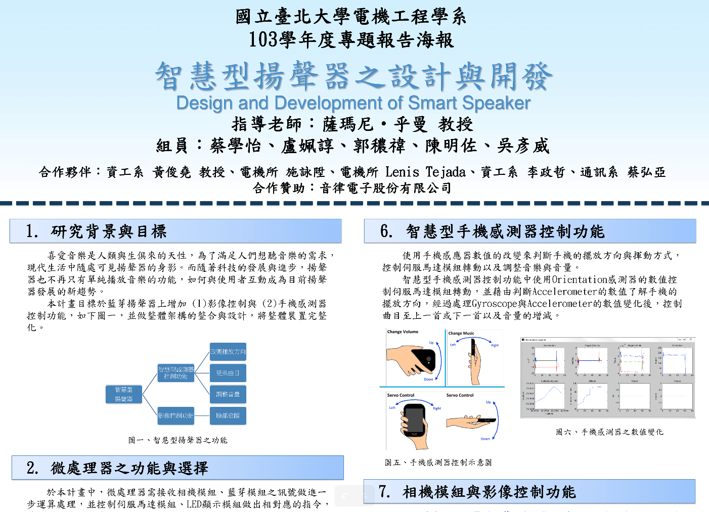

The Design and Development of Smark Speaker
This project is the cooperation between our school and the Elytone Electronic Corporation.
Our group design a system composed by the smart phone APP and the embedded board.
The user can control the volumn, angle and song by waving the phone, face tracking and hand recognition.
● Android application development
● Bluetooth transfer
